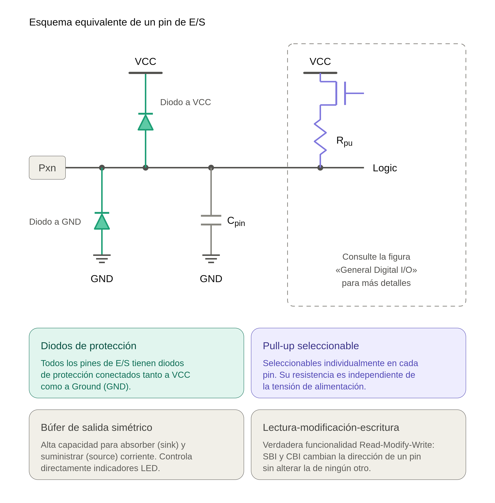
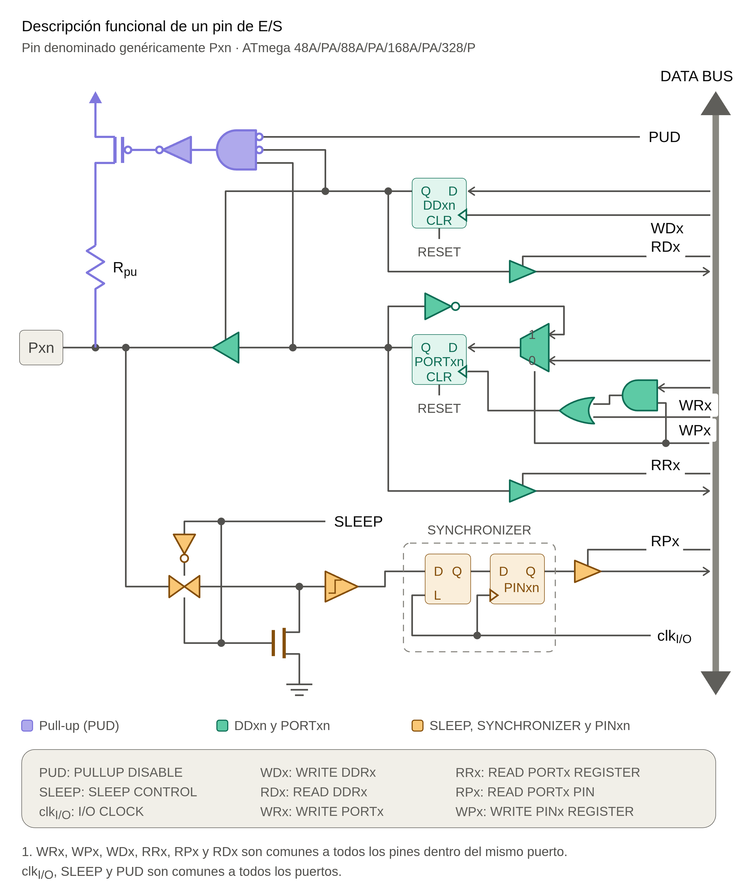
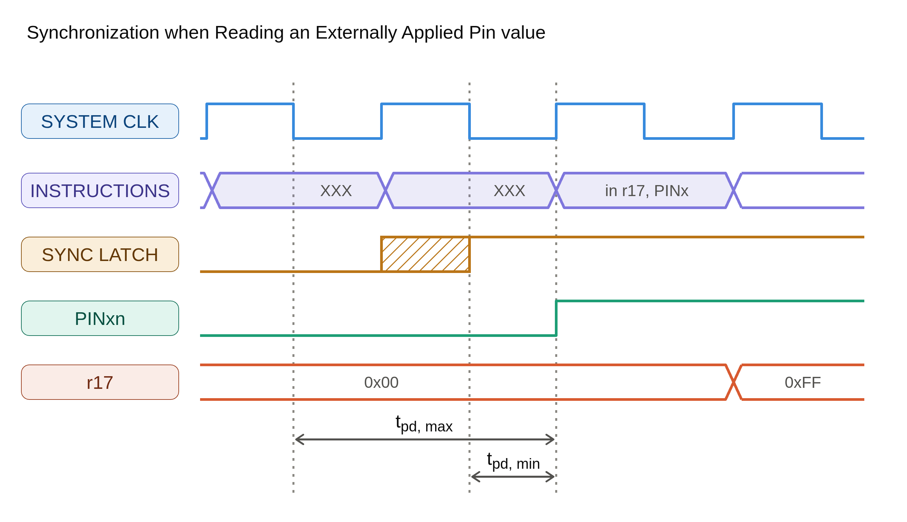
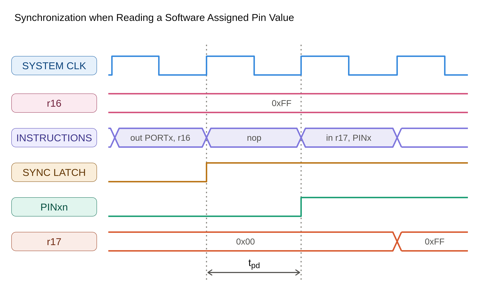
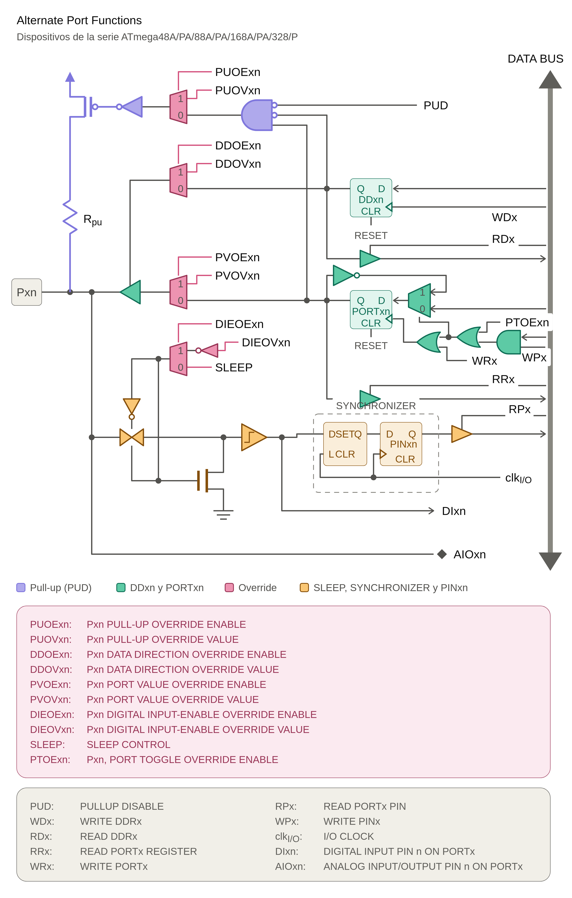

PUERTOS DE E/S. ATmega48A/PA/ 88A/PA/ 168A/PA/ 328/P
1. DESCRIPCIÓN GENERAL
Todos los puertos AVR disponen de una verdadera funcionalidad de lectura-modificación-escritura (Read-Modify-Write) cuando se utilizan como puertos digitales de E/S (I/O). Esto significa que la dirección de un pin del puerto puede modificarse sin cambiar involuntariamente la dirección de ningún otro pin mediante las instrucciones SBI y CBI.
Lo mismo se aplica al modificar el valor de salida (cuando el pin está configurado como salida) o al habilitar/deshabilitar las resistencias pull-up(cuando está configurado como entrada).
Cada búfer de salida presenta características de accionamiento simétricas, con una elevada capacidad tanto para absorber corriente (
Todos los pines del puerto disponen de resistencias pull-up seleccionables individualmente, cuya resistencia es independiente de la tensión de alimentación.
Todos los pines de E/S poseen diodos de protección conectados tanto a VCC como a Ground (GND), tal como se indica en la siguiente

1.1. Registros de control de puertos
Todos los registros y referencias a bits de esta sección se escriben utilizando una forma general. Una letra minúscula «x» representa la letra correspondiente al puerto, mientras que una letra minúscula «n» representa el número de bit y en esta documentación se representa de forma general como PORTxn.
Sin embargo, al utilizar las definiciones de registros o bits en un programa, debe emplearse la denominación específica. Por ejemplo, PORTB3 corresponde al bit n.º 3 del Puerto B,
Para la gestión de cada puerto, el dispositivo asigna tres posiciones de memoria de E/S fundamentales:
- PORTx: Registro de datos (Data Register).
- DDRx: Registro de dirección de datos (Data Direction Register).
- PINx: Pines de entrada del puerto (Port Input Pins).
La posición de E/S correspondiente a los pines de entrada del puerto (PINx) es de solo lectura, mientras que el Registro de datos (PORTx) y el Registro de dirección de datos (DDRx) permiten tanto lectura como escritura.
Sin embargo, escribir un uno lógico (1) en un bit del registro PINx provoca una conmutación (toggle) del bit correspondiente en el Registro de datos PORTx.
| Registro / Componente | Tipo de Acceso | Descripción y Características |
|---|---|---|
| PINx | Solo Lectura | Permite leer el estado lógico actual de los pines. Excepción: Escribir un uno lógico (1) en un bit de este registro provoca una conmutación (toggle) del bit correspondiente en el Registro de datos PORTx. |
| PORTx | Lectura / Escritura | Controla el valor de salida (si el pin está como salida) o activa las resistencias de pull-up (si el pin está como entrada). |
| DDRx | Lectura / Escritura | Define la dirección del pin: 0 para entrada (Input) y 1 para salida (Output). |
Control Global de Pull-up (PUD): El bit PUD (Pull-up Disable) ubicado en el registro MCUCR se encarga de deshabilitar la función pull-up para absolutamente todos los pines de todos los puertos cuando se encuentra establecido (en uno).
1.2. Funciones Alternativas y Multiplexación
La mayoría de los pines de los puertos se encuentran multiplexados con funciones alternativas correspondientes a los distintos periféricos internos del dispositivo.
Cabe destacar que habilitar la función alternativa de algunos pines específicos de un puerto no afecta al uso de los demás pines del mismo puerto, los cuales pueden seguir utilizándose como E/S digital de propósito general.
2. PUERTOS COMO E/S DIGITAL GENERAL
Los puertos son puertos de E/S bidireccionales con resistencias pull-up internas opcionales. La descripción funcional de un pin de E/S se denomina genéricamente Pxn.

2.1 Configuración del pin
Cada pin del puerto está asociado con tres bits de registro: DDxn, PORTxn y PINxn:
- Los bits
DDxnse encuentran en la dirección de E/S deDDRx. - Los bits
PORTxnse encuentran en la dirección de E/S dePORTx. - Los bits
PINxnse encuentran en la dirección de E/S dePINx.
El bit DDxn del registro DDRx selecciona la dirección de funcionamiento del pin:
- Si se escribe un uno lógico (
1) enDDxn, el pinPxnse configura como salida. - Si se escribe un cero lógico (
0) enDDxn, el pinPxnse configura como entrada.
Comportamiento como Entrada:
- Escribir un uno lógico (
1) enPORTxnactiva la resistencia pull-up. - Para desactivar la resistencia pull-up, se debe escribir un cero lógico (
0) enPORTxno configurar el pin como salida. - Los pines se encuentran en estado tri-state (alta impedancia) durante el reset.
Comportamiento como Salida:
- Escribir un uno lógico (
1) enPORTxnlleva el pin a nivel alto (1). - Escribir un cero lógico (
0) enPORTxnlleva el pin a nivel bajo (0).
2.2 Conmutación del pin
Escribir un uno lógico (1) en PINxn conmuta (toggle) el valor de PORTxn, independientemente del valor de DDxn. La instrucción SBI puede utilizarse para este fin en un único bit.
2.3 Conmutación entre entrada y salida
Al cambiar entre el estado tri-state
DDxn, PORTxn = 0b00 y el estado de salida en nivel alto
DDxn, PORTxn = 0b11Debe producirse un estado intermedio que sea uno de los siguientes
- Pull-up habilitado:
DDxn, PORTxn = 0b01 - Salida en nivel bajo:
DDxn, PORTxn = 0b10
Si el entorno de alta impedancia no percibe diferencia entre un nivel alto activo y un pull-up, el estado con pull-up habilitado es totalmente aceptable; de lo contrario, se puede usar el bit PUD del registro MCUCR para deshabilitar todas las resistencias pull-up globalmente.
Para la conmutación inversa (de entrada con pull-up a salida en nivel bajo), el usuario debe usar como estado intermedio tri-state (0b00) o salida en nivel alto (0b11).
Tabla: Configuraciones de los pines del puerto
| DDxn | PORTxn | PUD (en MCUCR) | E/S | Pull-up | Comentario |
|---|---|---|---|---|---|
| 0 | 0 | X | Entrada | No | Tri-state (Hi-Z) |
| 0 | 1 | 0 | Entrada | Sí | Pxn suministrará corriente si externamente se fuerza a nivel bajo |
| 0 | 1 | 1 | Entrada | No | Tri-state (Hi-Z) |
| 1 | 0 | X | Salida | No | Salida en nivel bajo (Sink) |
| 1 | 1 | X | Salida | No | Salida en nivel alto (Source) |
Nota: «X» significa que el valor de ese bit es irrelevante para el estado indicado.
2.4 Lectura del valor del pin
Independientemente de DDxn, el estado del pin puede leerse mediante el bit correspondiente en PINxn. Como se muestra en la figura siguiente, el bit del registro PINxn y el latch (cerrojo) que lo precede constituyen un sincronizador. Este sincronizador es necesario para evitar situaciones de metastabilidad cuando el valor del pin físico cambia cerca del flanco del reloj interno. Sin embargo, también introduce un retardo.
La figura siguiente muestra un diagrama temporal de la sincronización cuando se lee un valor aplicado externamente al pin. Los retardos de propagación máximo y mínimo se representan respectivamente como tpd,max y tpd,min.

NOP. La instrucción OUT establece la señal de sincronización, haciendo que el retardo tpd introducido sea exactamente de 1 período del reloj del sistema.

2.4.1. Ejemplo de código
El siguiente ejemplo ilustra las operaciones descritas para el Puerto B:
- Establecer en nivel alto los pines 0 y 1.
- Establecer en nivel bajo los pines 2 y 3.
- Configurar los pines 4 a 7 como entradas.
- Asignar resistencias pull-up a los pines 6 y 7.
- Inserción de la instrucción
NOPprevia a la lectura de los pines.
<pre><code class="language-c">
unsigned char i;
...
/* Definir resistencias de pull-up y establecer salidas en alto */
PORTB = (1<<PB7)|(1<<PB6)|(1<<PB1)|(1<<PB0);
/* Definir direcciones para los pines del puerto */
DDRB = (1<<DDB3)|(1<<DDB2)|(1<<DDB1)|(1<<DDB0);
/* Insertar nop para sincronización */
__no_operation();
/* Leer pines del puerto */
i = PINB;
...
</pre></code>
2.5 Habilitación de Entrada Digital y Modos de Reposo (Sleep Modes)
Como se muestra en el Esquema equivalente de un pin E/S, en el pun to 2.1. la señal de entrada digital se puede acoplar/fijar a masa (ground) en la entrada del Disparador Schmitt (Schmitt Trigger).
La señal denotada como SLEEP en la figura la establece el Controlador de Reposo (MCU Sleep Controller) en el modo de Reducción de Potencia (Power-down), modo de Ahorro de Potencia (Power-save) y modo de Espera (Standby) para evitar un alto consumo de potencia si algunas señales de entrada se dejan flotantes o tienen un nivel de señal analógica cercano a $V_{CC}/2$.
SLEEP se anula para los pines de puerto habilitados como pines de interrupción externa. Si la solicitud de interrupción externa no está habilitada, SLEEP permanece activa también para estos pines. SLEEP también es anulada por varias otras funciones alternativas, tal como se describe en ”Funciones Alternativas del Puerto” más adelante.
Si un nivel lógico alto (“uno”) está presente en un pin de interrupción externa asíncrona configurado como “Interrupción por Flanco de Subida, Flanco de Bajada o Cualquier Cambio Lógico en el Pin” mientras la interrupción externa no está habilitada, el Flag de Interrupción Externa correspondiente se activará al reanudar desde alguno de los modos de reposo (Sleep) mencionados anteriormente, ya que la fijación de nivel (clamping) en estos modos de reposo produce el cambio lógico solicitado.
2.6 Pines No Conectados
Si algunos pines no se utilizan, se recomienda garantizar que tengan un nivel definido. Aunque la mayoría de las entradas digitales se deshabilitan en los modos de reposo profundo (deep sleep) como se describió anteriormente, deben evitarse las entradas flotantes para reducir el consumo de corriente en todos los demás modos donde las entradas digitales están habilitadas (Reset, modo Activo y modo Idle).
El método más simple para garantizar un nivel definido en un pin no utilizado es habilitar la resistencia de pull-up interna. En este caso, la pull-up se deshabilitará durante el Reset. Si es importante mantener un bajo consumo de potencia durante el Reset, se recomienda utilizar una pull-up o pull-down externa. No se recomienda conectar los pines no utilizados directamente a $V_{CC}$ o GND, ya que esto puede causar corrientes excesivas si el pin se configura accidentalmente como salida.
3. FUNCIONES ALTERNATIVAS DEL PUERTO
La mayoría de los pines de puerto tienen funciones alternativas además de operar como E/S digitales de propósito general. La imagen siguiente, ALTERNATE PORT FUNCTIONS muestra cómo las señales de control de los pines de puerto de la versión simplificada de la imagen Descripción funcional de un pin de E/S en el punto 2. PUERTOS COMO E/S DIGITAL GENERAL, pueden ser anuladas por funciones alternativas. Es posible que las señales de anulación (overriding signals) no estén presentes en todos los pines de puerto, pero la figura sirve como una descripción genérica aplicable a todos los pines de puerto de la familia de microcontroladores AVR.

-
Nota.
WRx,WPx,WDx,RRx,RPxyRDxson comunes a todos los pines dentro del mismo puerto. clkI/O,SLEEPyPUDson comunes a todos los puertos. Todas las demás señales son únicas para cada pin.
La Tabla siguiente resume la función de las señales de anulación (overriding signals). Los índices de pin y puerto de la Figura 14-5 en la página 89 no se muestran en las tablas siguientes. Las señales de anulación se generan internamente en los módulos que poseen la función alternativa.
| Nombre de la Señal | Nombre Completo | Descripción |
|---|---|---|
PUOE |
Pull-up Override Enable (Habilitación de Anulación de Pull-up) |
Si esta señal se establece a '1', la habilitación de la resistencia de pull-up es controlada por la señal PUOV. Si esta señal se limpia a '0', la pull-up se habilita cuando {DDxn, PORTxn, PUD} = 0b010. |
PUOV |
Pull-up Override Value (Valor de Anulación de Pull-up) |
Si PUOE está activa, la pull-up se habilita/deshabilita cuando PUOV se establece/limpia, independientemente de la configuración de los bits de los registros DDxn, PORTxn y PUD. |
DDOE |
Data Direction Override Enable (Habilitación de Anulación de Dirección de Datos) |
Si esta señal se establece a '1', la habilitación del controlador de salida (Output Driver) es controlada por la señal DDOV. Si esta señal se limpia a '0', el controlador de salida se habilita mediante el bit del registro DDxn. |
DDOV |
Data Direction Override Value (Valor de Anulación de Dirección de Datos) |
Si DDOE está activa, el controlador de salida se habilita/deshabilita cuando DDOV se establece/limpia, independientemente de la configuración del bit del registro DDxn. |
PVOE |
Port Value Override Enable (Habilitación de Anulación del Valor del Puerto) |
Si esta señal se establece a '1' y el controlador de salida está habilitado, el valor del puerto es controlado por la señal PVOV. Si PVOE se limpia a '0' y el controlador de salida está habilitado, el valor del puerto es controlado por el bit del registro PORTxn. |
PVOV |
Port Value Override Value (Valor de Anulación del Valor del Puerto) |
Si PVOE está activa, el valor del puerto se establece en PVOV, independientemente de la configuración del bit del registro PORTxn. |
PTOE |
Port Toggle Override Enable (Habilitación de Anulación de Conmutación del Puerto) |
Si PTOE está activa, el bit del registro PORTxn se invierte (toggle). |
DIEOE |
Digital Input Enable Override Enable (Habilitación de Anulación de Habilitación de Entrada Digital) |
Si este bit se establece a '1', la habilitación de la entrada digital es controlada por la señal DIEOV. Si esta señal se limpia a '0', la habilitación de la entrada digital es determinada por el estado de la MCU (modo Normal, modo Sleep).
|
DIEOV |
Digital Input Enable Override Value (Valor de Anulación de Habilitación de Entrada Digital) |
Si DIEOE está activa, la entrada digital se habilita/deshabilita cuando DIEOV se establece/limpia, independientemente del estado de la MCU (modo Normal, modo Sleep). |
DI |
Digital Input (Entrada Digital) |
Esta es la entrada digital hacia las funciones alternativas. En la figura, la señal está conectada a la salida del Disparador Schmitt (Schmitt Trigger), pero antes del sincronizador. A menos que la entrada digital se utilice como fuente de reloj, el módulo con la función alternativa utilizará su propio sincronizador. |
AIO |
Analog Input/Output (Entrada/Salida Analógica) |
Esta es la entrada/salida analógica hacia/desde las funciones alternativas. La señal está conectada directamente a la terminal física (pad) y se puede utilizar de forma bidireccional. |
Las siguientes subsecciones describen brevemente las funciones alternativas para cada puerto y relacionan las señales de anulación con la función alternativa. Consulte la descripción de la función alternativa correspondiente para obtener más detalles.